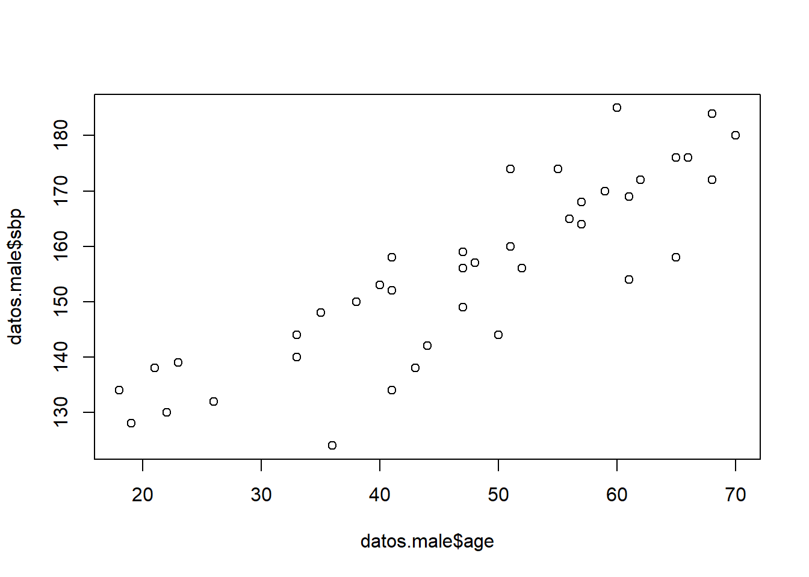
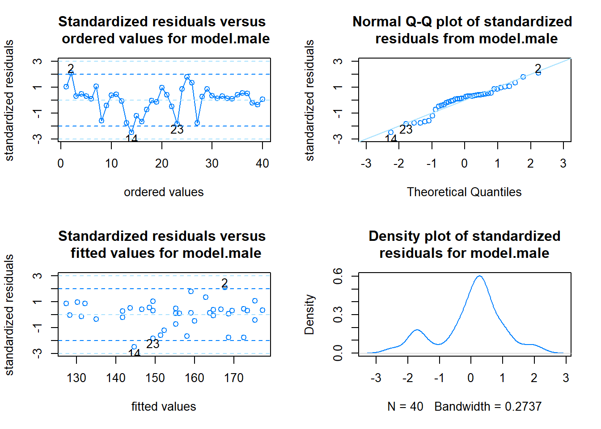
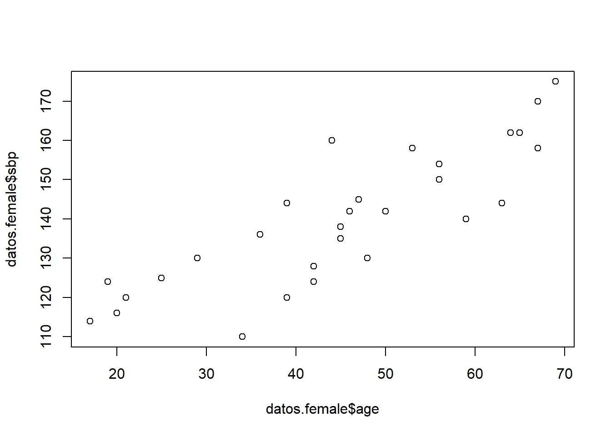
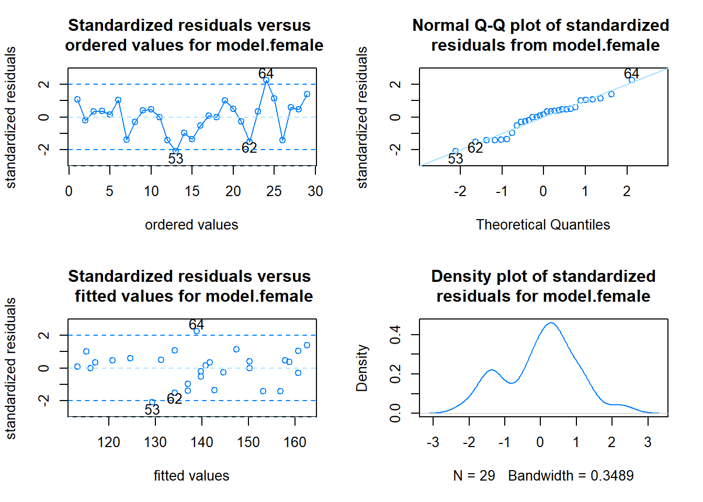
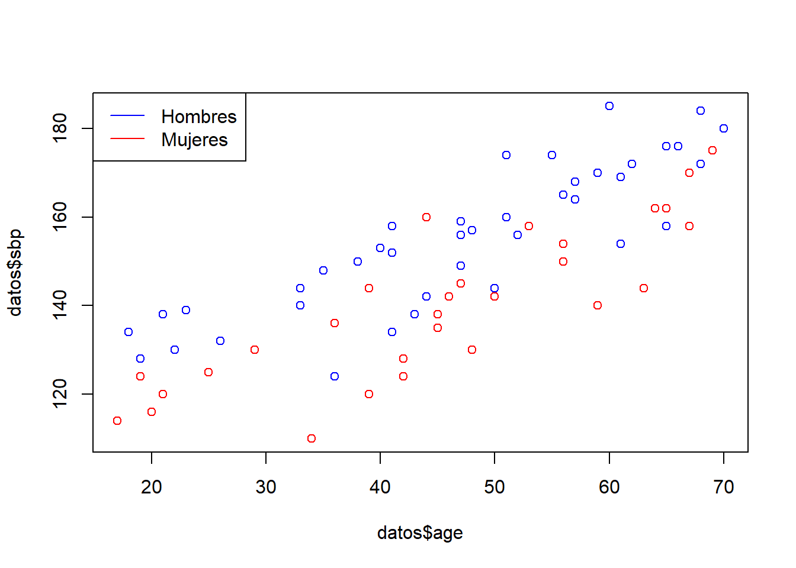

datos <- read.table("bloodpres1.txt", header=TRUE)
head(datos) sbp age sex
1 158 41 M
2 185 60 M
3 152 41 M
4 159 47 M
5 176 66 M
6 156 47 MAritz Adin
10/11/2025
bloodpress1.txt para ajustar un modelo de regresión lineal que permita estimar la presión sistólica en hombres según la edad. sbp age sex
1 158 41 M
2 185 60 M
3 152 41 M
4 159 47 M
5 176 66 M
6 156 47 Mlm()pos <- which(datos$sex=="M")
datos.male <- datos[pos,]
## Diagrama de dispersión ##
plot(datos.male$age, datos.male$sbp)
[1] 212.6013[1] 0.8629821
Call:
lm(formula = sbp ~ age, data = datos.male)
Residuals:
Min 1Q Median 3Q Max
-20.647 -3.128 1.681 3.912 17.280
Coefficients:
Estimate Std. Error t value Pr(>|t|)
(Intercept) 110.0385 4.4892 24.51 < 2e-16 ***
age 0.9614 0.0913 10.53 7.98e-13 ***
---
Signif. codes: 0 '***' 0.001 '**' 0.01 '*' 0.05 '.' 0.1 ' ' 1
Residual standard error: 8.479 on 38 degrees of freedom
Multiple R-squared: 0.7447, Adjusted R-squared: 0.738
F-statistic: 110.9 on 1 and 38 DF, p-value: 7.985e-13\(\beta_0=110.0385\) mmHg: Valor esperado para un hombre de 0 años de edad (en este ejemplo, no tiene sentido)
\(\beta_1=0.9614\): Por cada año que aumenta la edad de un hombre, se espera que la presión sistólica aumente en 0.9614 mmHg.
Representa gráficamente la línea ajustada
Cargando paquete requerido: latticeCargando paquete requerido: ggplot2
Shapiro-Wilk normality test
data: res
W = 0.93985, p-value = 0.03418No se verifica la hipótesis de normalidad de los residuos (p-valor\(<0.05\)), pero seguiremos con el ejercicio.
newdata <- data.frame(age=c(20,29,46,58,65))
predictions <- predict(model.male, newdata, interval="prediction")
cbind(newdata, predictions) age fit lwr upr
1 20 129.2656 111.1885 147.3426
2 29 137.9178 120.2262 155.6093
3 46 154.2607 136.8814 171.6401
4 58 165.7970 148.2983 183.2956
5 65 172.5264 154.8297 190.2232bloodpress1.txt para ajustar un modelo de regresión lineal que permita estimar la presión sistólica en mujeres según la edad.lm()pos <- which(datos$sex=="F")
datos.female <- datos[pos,]
## Diagrama de dispersión ##
plot(datos.female$age, datos.female$sbp)
[1] 229.867[1] 0.8439069
Call:
lm(formula = sbp ~ age, data = datos.female)
Residuals:
Min 1Q Median 3Q Max
-19.354 -4.797 1.254 4.747 21.153
Coefficients:
Estimate Std. Error t value Pr(>|t|)
(Intercept) 97.0771 5.5276 17.562 2.67e-16 ***
age 0.9493 0.1161 8.174 8.88e-09 ***
---
Signif. codes: 0 '***' 0.001 '**' 0.01 '*' 0.05 '.' 0.1 ' ' 1
Residual standard error: 9.563 on 27 degrees of freedom
Multiple R-squared: 0.7122, Adjusted R-squared: 0.7015
F-statistic: 66.81 on 1 and 27 DF, p-value: 8.876e-09\(\beta_0=97.0771\) mmHg: Valor esperado para una mujer de 0 años de edad (en este ejemplo, no tiene sentido)
\(\beta_1=0.9493\): Por cada año que aumenta la edad de una mujer, se espera que la presión sistólica aumente en 0.9493 mmHg.
Representa gráficamente la línea ajustada

Shapiro-Wilk normality test
data: res
W = 0.96328, p-value = 0.3948newdata <- data.frame(age=c(23,26,32,55,62))
predictions <- predict(model.female, newdata, interval="prediction")
cbind(newdata, predictions) age fit lwr upr
1 23 118.9115 98.2724 139.5506
2 26 121.7595 101.2909 142.2281
3 32 127.4554 107.2561 147.6547
4 55 149.2898 129.1922 169.3874
5 62 155.9351 135.5735 176.2966bloodpress1.txt para ajustar un modelo de regresión lineal que permita estimar la presión sistólica según la edad y el sexo (sin interacción).plot(datos$age, datos$sbp, col=ifelse(datos$sex=="M","blue","red"))
legend("topleft", legend=c("Hombres","Mujeres"), lty=1, col=c("blue","red"))
lm()
Call:
lm(formula = sbp ~ age + sex, data = datos)
Residuals:
Min 1Q Median 3Q Max
-20.705 -3.299 1.248 4.325 21.160
Coefficients:
Estimate Std. Error t value Pr(>|t|)
(Intercept) 96.77353 3.62085 26.727 < 2e-16 ***
age 0.95606 0.07153 13.366 < 2e-16 ***
sexM 13.51345 2.16932 6.229 3.7e-08 ***
---
Signif. codes: 0 '***' 0.001 '**' 0.01 '*' 0.05 '.' 0.1 ' ' 1
Residual standard error: 8.878 on 66 degrees of freedom
Multiple R-squared: 0.7759, Adjusted R-squared: 0.7691
F-statistic: 114.2 on 2 and 66 DF, p-value: < 2.2e-16\[SBP = \beta_0 + \beta_1*age + \beta_2*I(sex=\mbox{"M"})\] - \(\beta_0=96.774\) mmHg: Valor esperado para una mujer de 0 años de edad (en este ejemplo, no tiene sentido)
\(\beta_0 + \beta_2=110.287\) mmHg: Valor esperado para un hombre de 0 años de edad (en este ejemplo, no tiene sentido)
\(\beta_1=0.956\): Por cada año que aumenta la edad de un paciente (hombre o mujer), se espera que la presión sistólica aumente en 0.956 mmHg.
Obtén la predicción para hombres y mujeres de 20, 30, y 40 años de edad
newdata <- data.frame(age=c(20,20,30,30,40,40), sex=c("M","F","M","F","M","F"))
predictions <- predict(model.AgeSex, newdata, interval="prediction")
cbind(newdata, predictions) age sex fit lwr upr
1 20 M 129.4081 111.05519 147.7611
2 20 F 115.8947 97.51421 134.2752
3 30 M 138.9687 120.86107 157.0764
4 30 F 125.4553 107.29885 143.6117
5 40 M 148.5293 130.55647 166.5021
6 40 F 135.0158 116.97289 153.0588HSWRESTLER de la librería PASWR2, ajusta un modelo de regresión para predecir la cantidad de grasa (tanfat). Selecciona las variables age, ht, wt, abs, triceps y subscap que mejor sirvan para predecir los valores de tanfat.Selecciona las variables eliminado secuencialmente aquellas que no son estadísticamente significativas.
Utiliza también la función stepAIC() de la librería MASS para seleccionar las variables.
Interpreta los coeficientes del modelo.
Predice el valor de tanfat para dos individuo con valores de la variable abs de 20mm y 25mm, respectivamente, y valores de subscap de 13mm.